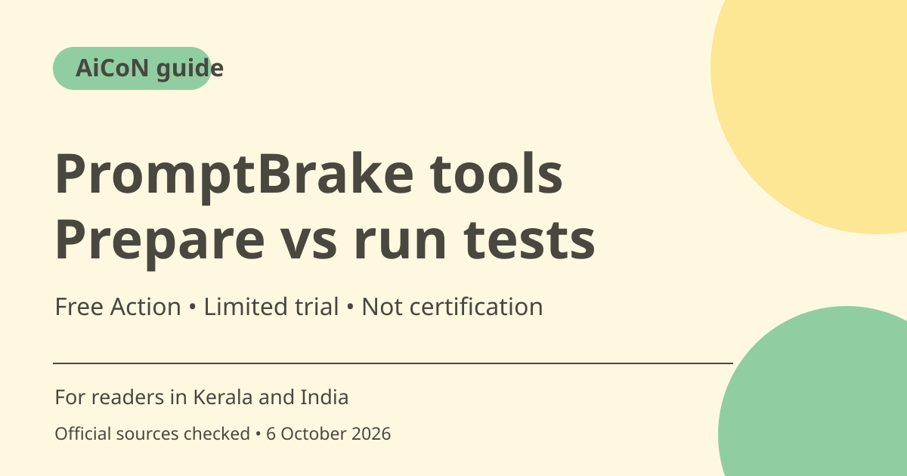

PromptBrake free tools: test preparation versus real scans
PromptBrake's free tools prepare AI-security inputs, checklists and test packs. Its current site also offers a free fixed-check GitHub Action and a limited runner trial. Preparing a test, checking response text and verifying real backend permission enforcement are different tasks.

What are the free tools?
The official page describes prompt-injection input generation, OWASP-style risk mapping, response-test packs, tool-call checks and release planning. The web tools and read-only MCP route require no PromptBrake signup or key. You still need a supported assistant client and any access or plan that client requires.
What they do not do
The free preparation tools do not run scans against your chatbot. A checklist does not certify security, and a risk mapping does not prove a vulnerability. A response saying it asked for approval is not evidence that a refund or email was actually blocked. Design tests around real outcomes as well as the words the model produced.
The older paid-only claim is stale
The current primary page offers a free GitHub Action with five prompt-injection and five synthetic-secret leakage response checks. It says no PromptBrake licence is required, although model and runner costs may apply. This is a fixed test set rather than execution of your custom tests.json pack, and literal response checks do not establish overall system security.
Limited trial and ongoing runner
The page describes a Docker runner trial with three scans for seven days and no payment required. Broader ongoing testing and custom regression packs use the configured runner and paid plans. Retests count toward quota. This guide does not repeat an older Enterprise price as a current requirement, because that is not established by the page checked.
Privacy and authorised targets
The MCP description says inputs and results are not stored but operational request metadata is logged. Review current policy and avoid sending production secrets as test examples. Use synthetic markers and test only systems you own or are explicitly authorised to assess. A free tool is not permission to probe someone else's chatbot.
Inspect tool calls and backend effects
Tool-call packs require capture of actual invocations and examine those observed calls. The page cautions that they do not verify backend effects or permission enforcement. Pair response and invocation checks with appropriate application logs and controlled staging tests. Document failures and re-test after changes rather than treating one pass as a permanent security verdict.
How to use it, step by step
- Open promptbrake.com/free-tools and choose the preparation tool that fits your own or authorised staging application.
- Define expected behaviour, approval boundaries and synthetic data before generating tests.
- Use the web interface or the documented read-only MCP route in a supported client. Review privacy and required client access first.
- Generate inputs, a checklist or a test pack, then inspect it before any execution.
- For the free GitHub Action, configure the staging endpoint, baseline and synthetic markers. Understand that it runs fixed checks, not your custom pack.
- For broader tests, inspect current trial/runner terms and quotas. Keep model and CI costs separate from tool access.
- Compare response text, observed tool calls and backend effects, fix failures and repeat controlled tests. Do not describe a passing scan as security certification.
Cost, eligibility and limits
| Preparation tools | Free, no PromptBrake signup/key for the stated web and read-only MCP route. Client costs can differ. |
|---|---|
| Free Action | Ten fixed response checks per the page; no PromptBrake licence. Model/runner costs may apply. |
| Runner trial | Three scans for seven days, no payment required per the checked page. Retests consume quota. |
| Limits | Custom tests require configured runner/CI access. Response or tool-call checks do not prove real backend approval enforcement. |
Frequently asked questions
Do free MCP tools scan my chatbot?
No. They prepare inputs and plans rather than executing scans.
Is every scan paid-only?
No. The current page lists a free fixed-check GitHub Action and a limited runner trial.
Does a safe response prove no unsafe action occurred?
No. Verify actual calls and backend effects separately.
Official sources
Checked 6 October 2026. Features and prices can change. This is a guide, not a personal product test.